Last updated: 2020-03-23
Checks: 7 0
Knit directory: EvaluateSingleCellClustering/
This reproducible R Markdown analysis was created with workflowr (version 1.4.0). The Checks tab describes the reproducibility checks that were applied when the results were created. The Past versions tab lists the development history.
Great! Since the R Markdown file has been committed to the Git repository, you know the exact version of the code that produced these results.
Great job! The global environment was empty. Objects defined in the global environment can affect the analysis in your R Markdown file in unknown ways. For reproduciblity it’s best to always run the code in an empty environment.
The command set.seed(20200322) was run prior to running the code in the R Markdown file. Setting a seed ensures that any results that rely on randomness, e.g. subsampling or permutations, are reproducible.
Great job! Recording the operating system, R version, and package versions is critical for reproducibility.
Nice! There were no cached chunks for this analysis, so you can be confident that you successfully produced the results during this run.
Great job! Using relative paths to the files within your workflowr project makes it easier to run your code on other machines.
Great! You are using Git for version control. Tracking code development and connecting the code version to the results is critical for reproducibility. The version displayed above was the version of the Git repository at the time these results were generated.
Note that you need to be careful to ensure that all relevant files for the analysis have been committed to Git prior to generating the results (you can use wflow_publish or wflow_git_commit). workflowr only checks the R Markdown file, but you know if there are other scripts or data files that it depends on. Below is the status of the Git repository when the results were generated:
Ignored files:
Ignored: .Rproj.user/
Ignored: data/simulated_data/
Untracked files:
Untracked: data/%
Untracked: data/allen_mouse_brain/
Untracked: data/intermediate_data/
Untracked: data/pbmc/
Untracked: data/pbmc_5k_v3.rds
Untracked: data/pbmc_5k_v3_label_transfered_from_10k.rds
Untracked: data/sc_mixology/
Untracked: docs/figure/
Unstaged changes:
Modified: analysis/index.Rmd
Note that any generated files, e.g. HTML, png, CSS, etc., are not included in this status report because it is ok for generated content to have uncommitted changes.
These are the previous versions of the R Markdown and HTML files. If you’ve configured a remote Git repository (see ?wflow_git_remote), click on the hyperlinks in the table below to view them.
| File | Version | Author | Date | Message |
|---|---|---|---|---|
| Rmd | efeef5e | Ming Tang | 2020-03-23 | Publish the initial files for myproject |
The 5k pbmc scRNAseq dataset was downloaded from 10x website and made into a Seruat object. The labels of 5k data were transferred using Seurat from 10k data following https://crazyhottommy.github.io/scRNA-seq-workshop-Fall-2019/scRNAseq_workshop_2.html
We next run our snakemake pipeline and visualize the results in our R package for the 5k PBMC dataset retrieved from 10x genomics website. We tested combinations of 8 different k.param(8,10,15,20,30,50,80,100), 5 different resolutions (0.5,0.6,0.8,1,1.2) and 5 different number of PCs (10,15,20,30,35) resulting 200 different parameter sets.
To follow the analysis, you can download the data at osf.io
library(scclusteval)
library(tidyverse)
library(patchwork)
library(Seurat)
library(dplyr)
# read in the seurat object
# the label transferring was done following
pbmc<- readRDS("data/pbmc_5k_v3_label_transfered_from_10k.rds")
subsample_idents<- readRDS("data/pbmc/gather_subsample.rds")
fullsample_idents<- readRDS("data/pbmc/gather_full_sample.rds")## how many PCs to include
ElbowPlot(pbmc, ndims = 40)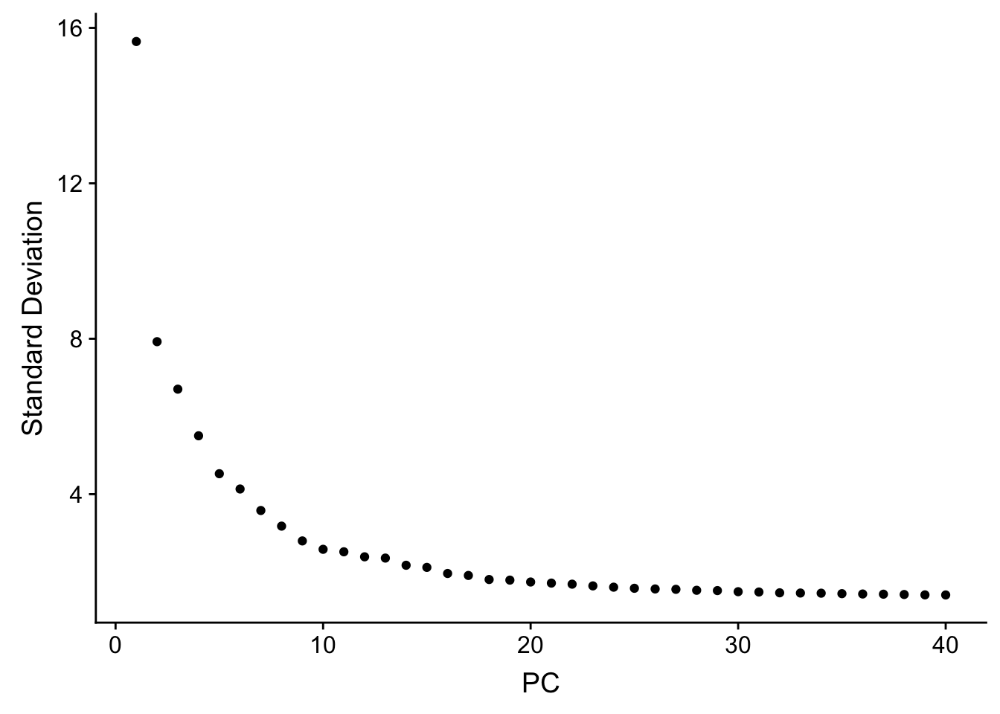
# a tibble with a list column
fullsample_idents# A tibble: 200 x 4
pc resolution k_param original_ident_full
<chr> <chr> <chr> <list>
1 10 0.5 8 <fct [4,595]>
2 15 0.5 8 <fct [4,595]>
3 20 0.5 8 <fct [4,595]>
4 30 0.5 8 <fct [4,595]>
5 35 0.5 8 <fct [4,595]>
6 10 0.6 8 <fct [4,595]>
7 15 0.6 8 <fct [4,595]>
8 20 0.6 8 <fct [4,595]>
9 30 0.6 8 <fct [4,595]>
10 35 0.6 8 <fct [4,595]>
# … with 190 more rows## how many clusters for each different comibination of parameter set?
fullsample_idents %>%
mutate(cluster_num = purrr::map_dbl(original_ident_full, ~length(unique(.x))))# A tibble: 200 x 5
pc resolution k_param original_ident_full cluster_num
<chr> <chr> <chr> <list> <dbl>
1 10 0.5 8 <fct [4,595]> 13
2 15 0.5 8 <fct [4,595]> 15
3 20 0.5 8 <fct [4,595]> 16
4 30 0.5 8 <fct [4,595]> 14
5 35 0.5 8 <fct [4,595]> 14
6 10 0.6 8 <fct [4,595]> 17
7 15 0.6 8 <fct [4,595]> 17
8 20 0.6 8 <fct [4,595]> 16
9 30 0.6 8 <fct [4,595]> 15
10 35 0.6 8 <fct [4,595]> 14
# … with 190 more rows# what's the relationship of clusters between k_param 8, 20 and 30 with same pc=20 and resolution = 0.6
fullsample_idents %>% mutate(id = row_number()) %>%
filter(pc == 20, resolution == 0.6, k_param == 8) # A tibble: 1 x 5
pc resolution k_param original_ident_full id
<chr> <chr> <chr> <list> <int>
1 20 0.6 8 <fct [4,595]> 8fullsample_idents %>% mutate(id = row_number()) %>%
filter(pc == 20, resolution == 0.6, k_param == 20) # A tibble: 1 x 5
pc resolution k_param original_ident_full id
<chr> <chr> <chr> <list> <int>
1 20 0.6 20 <fct [4,595]> 83fullsample_idents %>% mutate(id = row_number()) %>%
filter(pc == 20, resolution == 0.6, k_param == 100)# A tibble: 1 x 5
pc resolution k_param original_ident_full id
<chr> <chr> <chr> <list> <int>
1 20 0.6 100 <fct [4,595]> 183## x-axis is k_param = 20, and y-axis is k_param = 8
PairWiseJaccardSetsHeatmap(fullsample_idents$original_ident_full[[8]],
fullsample_idents$original_ident_full[[83]],
show_row_dend = F, show_column_dend = F,
cluster_row = F, cluster_column =F)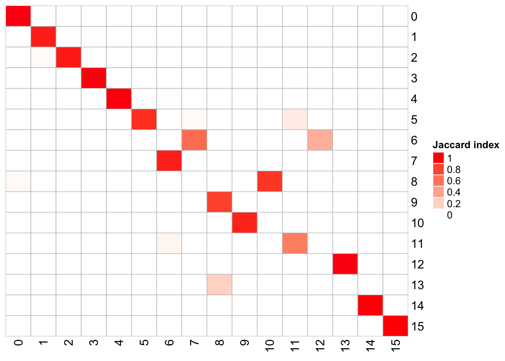
## x-axis is k_param = 100, and y-axis is k_param = 8
PairWiseJaccardSetsHeatmap(fullsample_idents$original_ident_full[[8]],
fullsample_idents$original_ident_full[[183]],
show_row_dend = F, show_column_dend = F,
cluster_row = F, cluster_column =F)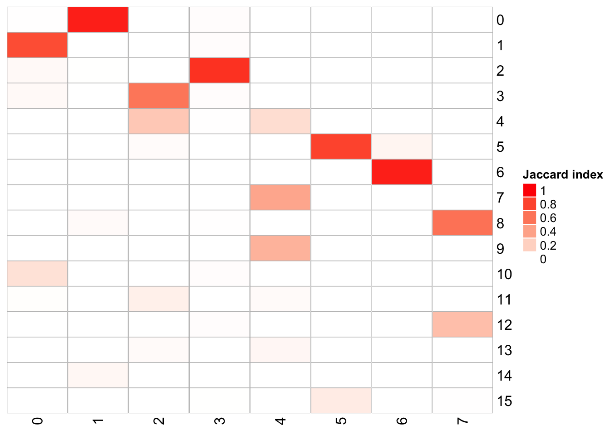
The k.param in the k-nearest neighbor algorithm after which a SNN graph is constructed. This parameter determines the resolution of the clustering where a bigger k yields a more interconnected graph and bigger clusters. We see if we increase the k param to 100, we get fewer number of total number of clusters.
Let’s check how the clusters are splitting when we increase the k.param.
Note for 5k pbmc dataset, I used SCTransform() in the Snakemake workflow. It generates more clusters than the previous NormalizeData(), ScaleData(), and FindVariableFeatures() workflow.
k8_ident<- fullsample_idents %>%
filter(pc == 20, resolution == 0.6, k_param == 8) %>%
pull(original_ident_full) %>%
`[[`(1)
pbmc<- AddMetaData(pbmc, metadata = k8_ident, col.name = "res0.6_k8")
k20_ident<- fullsample_idents %>%
filter(pc == 20, resolution == 0.6, k_param == 20) %>%
pull(original_ident_full) %>%
`[[`(1)
pbmc<- AddMetaData(pbmc, metadata = k20_ident, col.name = "res0.6_k20")
k100_ident<- fullsample_idents %>%
filter(pc == 20, resolution == 0.6, k_param == 100) %>%
pull(original_ident_full) %>%
`[[`(1)
pbmc<- AddMetaData(pbmc, metadata = k100_ident, col.name = "res0.6_k100")
p1<- DimPlot(pbmc, reduction = "umap", label = TRUE, group.by = "res0.6_k8", repel = TRUE) + ggtitle("k_param 8")
p2<- DimPlot(pbmc, reduction = "umap", label = TRUE, group.by = "res0.6_k20", repel = TRUE) + ggtitle("k_param 20")
p3<- DimPlot(pbmc, reduction = "umap", label = TRUE, group.by = "res0.6_k100", repel = TRUE) + ggtitle("k_param 100")
p4<- DimPlot(pbmc, reduction = "umap", group.by = "predicted.id", repel = TRUE, label = TRUE)
p1 + p2 + p3 + p4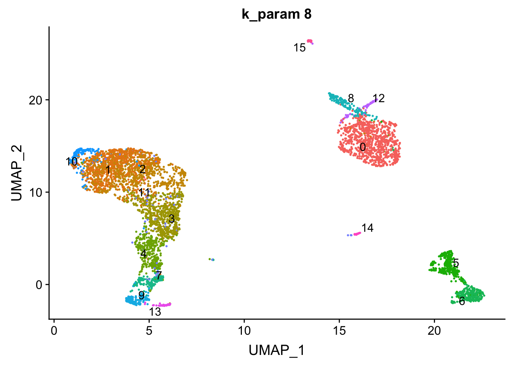
# k = 8
PairWiseJaccardSetsHeatmap(set_names(pbmc@meta.data$res0.6_k8, nm=colnames(pbmc)),
set_names(pbmc@meta.data$predicted.id, nm=colnames(pbmc)),
show_row_dend = F, show_column_dend = F,
cluster_row = F, cluster_column =F)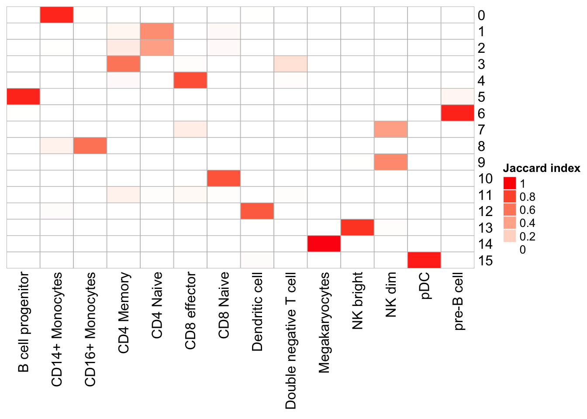
## we can check agains the transferred labels. k =20
PairWiseJaccardSetsHeatmap(set_names(pbmc@meta.data$res0.6_k20, nm=colnames(pbmc)),
set_names(pbmc@meta.data$predicted.id, nm=colnames(pbmc)),
show_row_dend = F, show_column_dend = F,
cluster_row = F, cluster_column =F)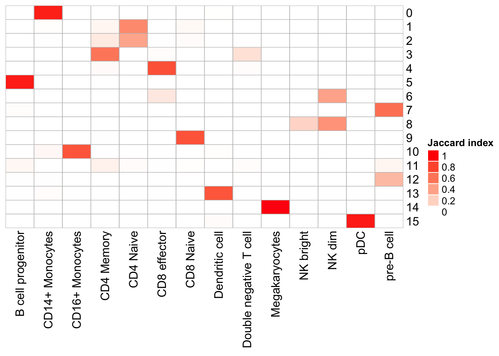
PairWiseJaccardSetsHeatmap(set_names(pbmc@meta.data$res0.6_k100, nm=colnames(pbmc)),
set_names(pbmc@meta.data$predicted.id, nm=colnames(pbmc)),
show_row_dend = F, show_column_dend = F,
cluster_row = F, cluster_column =F)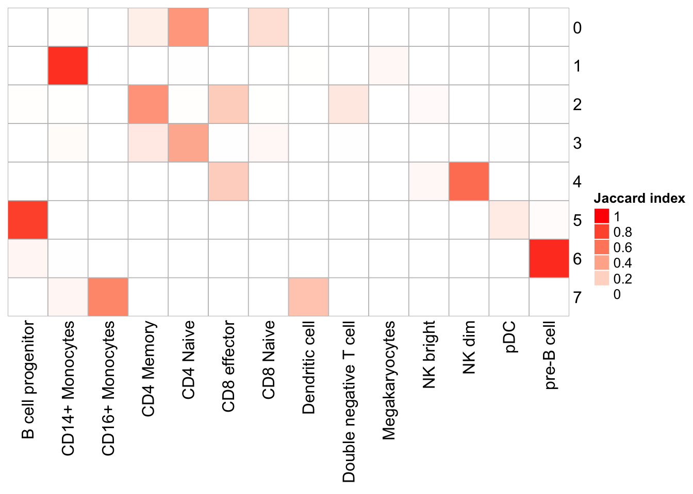
Note that, the transferred cell type from 10k pbmc data to our 5k data may not necessary be the true labels. Nevetherless, when the k_param is big (100), many cell types are merged together.
## change idents to cluster id when k is 8
Idents(pbmc)<- pbmc@meta.data$res0.6_k8
silhouette_scores<- CalculateSilhouette(pbmc, dims = 1:20)
sil_p1<- SilhouetteRainCloudPlot(silhouette_scores) + ggtitle("k_param 8")
## check silhouette score when k is 20
Idents(pbmc)<- pbmc@meta.data$res0.6_k20
silhouette_scores<- CalculateSilhouette(pbmc, dims = 1:20)
sil_p2<- SilhouetteRainCloudPlot(silhouette_scores) + ggtitle("k_param 20")
sil_p1 / sil_p2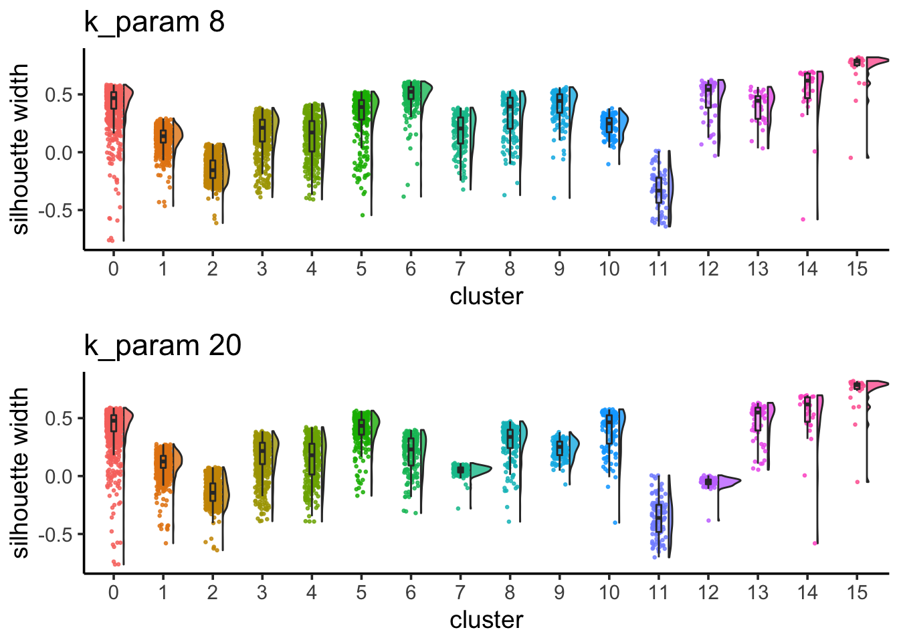
cluster 6 (when k_param is 8) split into cluster7,12 when k_param is 20 from the jaccard heatmap above.
The silhouette width for cluster7,12 is lower than cluster 6 suggesting that k_param=8 is a better option.
subsample_idents_list<- subsample_idents %>%
group_by(pc, resolution, k_param) %>%
nest()
subsample_idents_list %>% ungroup() %>% mutate(id = row_number()) %>%
filter(pc == 20, resolution == 0.6, k_param == 8)# A tibble: 1 x 5
pc resolution k_param data id
<chr> <chr> <chr> <list> <int>
1 20 0.6 8 <tibble [100 × 3]> 8subsample_idents_list %>% ungroup() %>% mutate(id = row_number()) %>%
filter(pc == 20, resolution == 0.6, k_param == 20)# A tibble: 1 x 5
pc resolution k_param data id
<chr> <chr> <chr> <list> <int>
1 20 0.6 20 <tibble [100 × 3]> 83## subsample for 100 times(rounds)
subsample_idents_list$data[[8]]# A tibble: 100 x 3
original_ident recluster_ident round
<list> <list> <chr>
1 <fct [3,676]> <fct [3,676]> 0
2 <fct [3,676]> <fct [3,676]> 1
3 <fct [3,676]> <fct [3,676]> 2
4 <fct [3,676]> <fct [3,676]> 3
5 <fct [3,676]> <fct [3,676]> 4
6 <fct [3,676]> <fct [3,676]> 5
7 <fct [3,676]> <fct [3,676]> 6
8 <fct [3,676]> <fct [3,676]> 7
9 <fct [3,676]> <fct [3,676]> 8
10 <fct [3,676]> <fct [3,676]> 9
# … with 90 more rowsp1<- JaccardRainCloudPlot(subsample_idents_list$data[[8]]$original_ident,
subsample_idents_list$data[[8]]$recluster_ident) +
geom_hline(yintercept = c(0.6, 0.75), linetype = 2) +
xlab("cluster id w/ k=8 res=0.6 pc=20")
p2<- JaccardRainCloudPlot(subsample_idents_list$data[[83]]$original_ident,
subsample_idents_list$data[[83]]$recluster_ident) +
geom_hline(yintercept = c(0.6, 0.75), linetype = 2) +
xlab("cluster id w/ k=20 res=0.6 pc=20")
p1 / p2 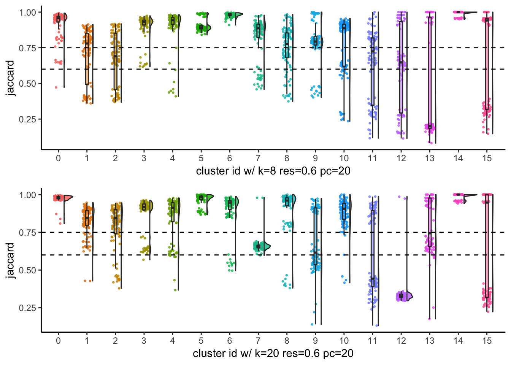
From the Jaccard raincloud plot, cluster7 and cluster12 have very low jaccard index. This is consistent with the Silhouette widths.
As a rule of thumb, clusters with a mean/median stability score less than 0.6 should be considered unstable. scores between 0.6 and 0.75 indicate that the cluster is measuring a pattern in the data. clusters with stability score greater than 0.85 are highly stable (Zumel and Mount 2014). This task can be achieved using AssignStableCluster function in our R package. We observed for some datasets, the jaccard index follows a bimodal distribution, so the mean or median may not be representative. As an alternative, we also calculate the percentage of subsampling with a jaccard greater than a cutoff (e.g. 0.85), which can be used to check stability assessments.
## return a list
## ?AssignStableCluster
AssignStableCluster(subsample_idents_list$data[[55]]$original_ident,
subsample_idents_list$data[[55]]$recluster_ident,
jaccard_cutoff = 0.8,
method = "jaccard_percent",
percent_cutoff = 0.8)$jaccardIndex
# A tibble: 100 x 17
`0` `1` `2` `3` `4` `5` `6` `7` `8` `9` `10` `11`
<dbl> <dbl> <dbl> <dbl> <dbl> <dbl> <dbl> <dbl> <dbl> <dbl> <dbl> <dbl>
1 0.955 0.959 0.826 0.913 0.995 0.660 0.871 0.929 0.825 0.667 0.776 0.8
2 0.952 0.993 0.928 0.938 0.990 0.678 0.561 0.95 0.427 0.774 0.966 0.819
3 0.945 0.971 0.854 0.947 0.985 0.683 0.917 0.959 0.736 0.574 0.851 0.122
4 0.959 0.992 0.916 0.937 0.995 0.699 0.497 0.956 0.395 0.8 0.966 0.772
5 0.975 0.990 0.953 0.978 0.981 0.660 0.540 0.963 0.455 0.883 0.980 0.970
6 0.931 0.958 0.943 0.949 0.995 0.661 0.910 0.954 0.777 0.517 0.731 0.890
7 0.963 0.978 0.938 0.973 0.991 0.645 0.484 0.964 0.394 0.862 0.885 0.756
8 0.979 0.988 0.950 0.963 0.990 0.687 0.504 0.967 0.397 0.931 0.962 0.919
9 0.966 0.989 0.931 0.959 0.986 0.675 0.556 0.967 0.437 0.902 0.967 0.972
10 0.931 0.989 0.935 0.975 0.990 0.683 1 0.951 0.810 0.486 1 0.933
# … with 90 more rows, and 5 more variables: `12` <dbl>, `13` <dbl>,
# `14` <dbl>, `15` <dbl>, `16` <dbl>
$stable_cluster
0 1 2 3 4 5 6 7 8 9 10 11
TRUE TRUE TRUE TRUE TRUE FALSE FALSE TRUE FALSE FALSE FALSE TRUE
12 13 14 15 16
FALSE FALSE FALSE TRUE FALSE
$number_of_stable_cluster
[1] 8
$stable_index
0 1 2 3 4 5 6 7 8 9 10 11 12 13 14
1.00 1.00 1.00 1.00 1.00 0.08 0.43 1.00 0.24 0.36 0.78 0.84 0.08 0.33 0.40
15 16
1.00 0.31 # ?AssignStableCluster
## for all sets of parameters
stable_clusters<- subsample_idents_list %>%
mutate(stable_cluster = map(data, ~ AssignStableCluster(.x$original_ident,
.x$recluster_ident,
jaccard_cutoff = 0.8,
method = "jaccard_percent",
percent_cutoff = 0.8)))with y axis representing the number of stable clusters and total number of clusters.
ParameterSetScatterPlot(stable_clusters = stable_clusters,
fullsample_idents = fullsample_idents,
x_var = "k_param",
y_var = "number",
facet_rows = "resolution",
facet_cols = "pc")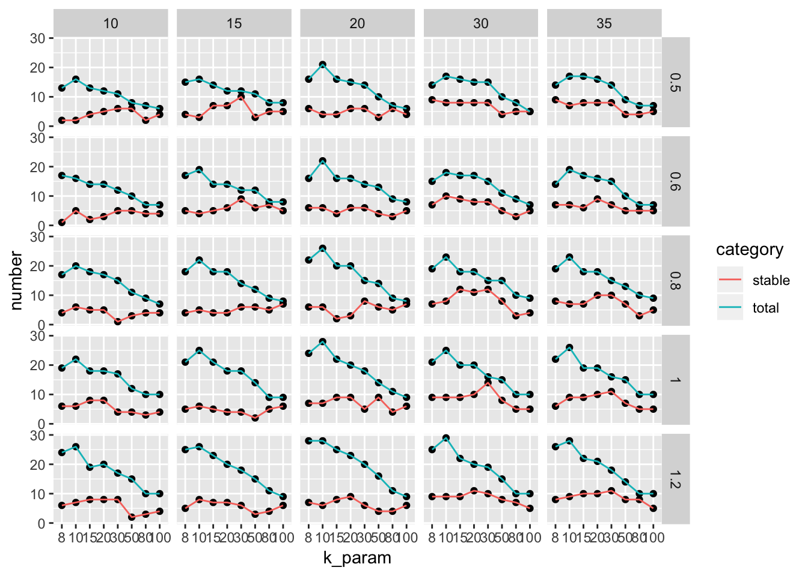
The ParameterSetScatterPlot function will calculate the percentage of cells in stable clusters and plot a scatter/line plot.
ParameterSetScatterPlot(stable_clusters = stable_clusters,
fullsample_idents = fullsample_idents,
x_var = "k_param",
y_var = "percentage",
facet_rows = "resolution",
facet_cols = "pc") +
ggtitle("percentage of cells in stable clusters")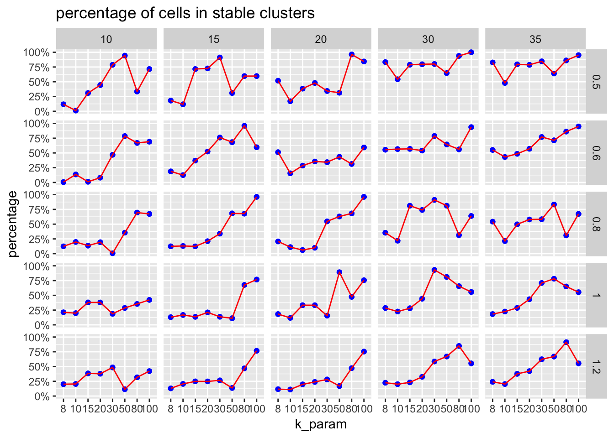
sessionInfo()R version 3.5.1 (2018-07-02)
Platform: x86_64-apple-darwin15.6.0 (64-bit)
Running under: macOS High Sierra 10.13.6
Matrix products: default
BLAS: /Library/Frameworks/R.framework/Versions/3.5/Resources/lib/libRblas.0.dylib
LAPACK: /Library/Frameworks/R.framework/Versions/3.5/Resources/lib/libRlapack.dylib
locale:
[1] en_US.UTF-8/en_US.UTF-8/en_US.UTF-8/C/en_US.UTF-8/en_US.UTF-8
attached base packages:
[1] stats graphics grDevices utils datasets methods base
other attached packages:
[1] patchwork_0.0.1 forcats_0.4.0 stringr_1.4.0
[4] dplyr_0.8.3 purrr_0.3.2 readr_1.3.1
[7] tidyr_1.0.0 tibble_2.1.3 ggplot2_3.1.0
[10] tidyverse_1.2.1 scclusteval_0.0.0.9000 Seurat_3.0.2
loaded via a namespace (and not attached):
[1] Rtsne_0.15 colorspace_1.4-1 rjson_0.2.20
[4] ellipsis_0.2.0.1 ggridges_0.5.1 rprojroot_1.3-2
[7] circlize_0.4.7 GlobalOptions_0.1.0 fs_1.2.6
[10] clue_0.3-57 rstudioapi_0.10 listenv_0.7.0
[13] npsurv_0.4-0 ggrepel_0.8.0 fansi_0.4.0
[16] lubridate_1.7.4 xml2_1.2.0 codetools_0.2-16
[19] splines_3.5.1 R.methodsS3_1.7.1 lsei_1.2-0
[22] knitr_1.21 jsonlite_1.6 workflowr_1.4.0
[25] broom_0.5.2 ica_1.0-2 cluster_2.0.7-1
[28] png_0.1-7 R.oo_1.22.0 sctransform_0.2.0
[31] compiler_3.5.1 httr_1.4.0 backports_1.1.3
[34] assertthat_0.2.0 Matrix_1.2-15 lazyeval_0.2.1
[37] cli_1.0.1 htmltools_0.3.6 tools_3.5.1
[40] rsvd_1.0.0 igraph_1.2.2 gtable_0.2.0
[43] glue_1.3.1 RANN_2.6 reshape2_1.4.3
[46] Rcpp_1.0.2 cellranger_1.1.0 vctrs_0.2.3
[49] gdata_2.18.0 ape_5.2 nlme_3.1-137
[52] gbRd_0.4-11 lmtest_0.9-36 xfun_0.4
[55] globals_0.12.4 rvest_0.3.2 lifecycle_0.1.0
[58] irlba_2.3.2 gtools_3.8.1 future_1.10.0
[61] MASS_7.3-51.1 zoo_1.8-4 scales_1.0.0
[64] hms_0.5.3 parallel_3.5.1 RColorBrewer_1.1-2
[67] ComplexHeatmap_2.1.0 yaml_2.2.0 reticulate_1.10
[70] pbapply_1.3-4 gridExtra_2.3 stringi_1.2.4
[73] caTools_1.17.1.1 bibtex_0.4.2 shape_1.4.4
[76] Rdpack_0.10-1 SDMTools_1.1-221 rlang_0.4.5
[79] pkgconfig_2.0.2 bitops_1.0-6 evaluate_0.12
[82] lattice_0.20-38 ROCR_1.0-7 labeling_0.3
[85] htmlwidgets_1.3 cowplot_0.9.3 tidyselect_0.2.5
[88] plyr_1.8.4 magrittr_1.5 R6_2.3.0
[91] gplots_3.0.1 generics_0.0.2 pillar_1.3.1
[94] haven_2.0.0 whisker_0.3-2 withr_2.1.2
[97] fitdistrplus_1.0-11 survival_2.43-3 future.apply_1.0.1
[100] tsne_0.1-3 modelr_0.1.2 crayon_1.3.4
[103] utf8_1.1.4 KernSmooth_2.23-15 plotly_4.8.0
[106] rmarkdown_1.11 GetoptLong_0.1.7 grid_3.5.1
[109] readxl_1.2.0 data.table_1.11.8 git2r_0.23.0
[112] metap_1.0 digest_0.6.18 R.utils_2.7.0
[115] munsell_0.5.0 viridisLite_0.3.0